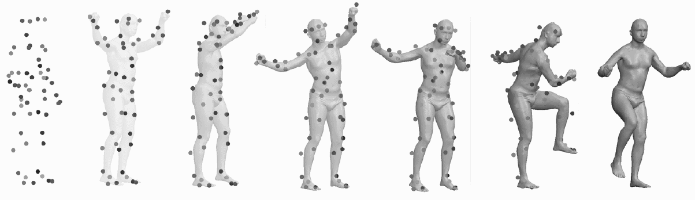
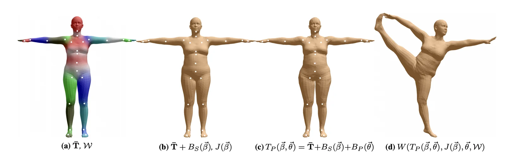
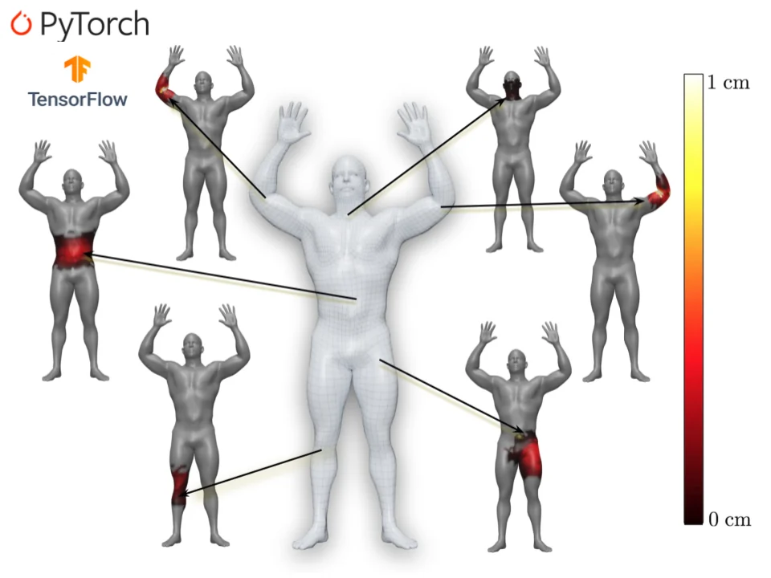
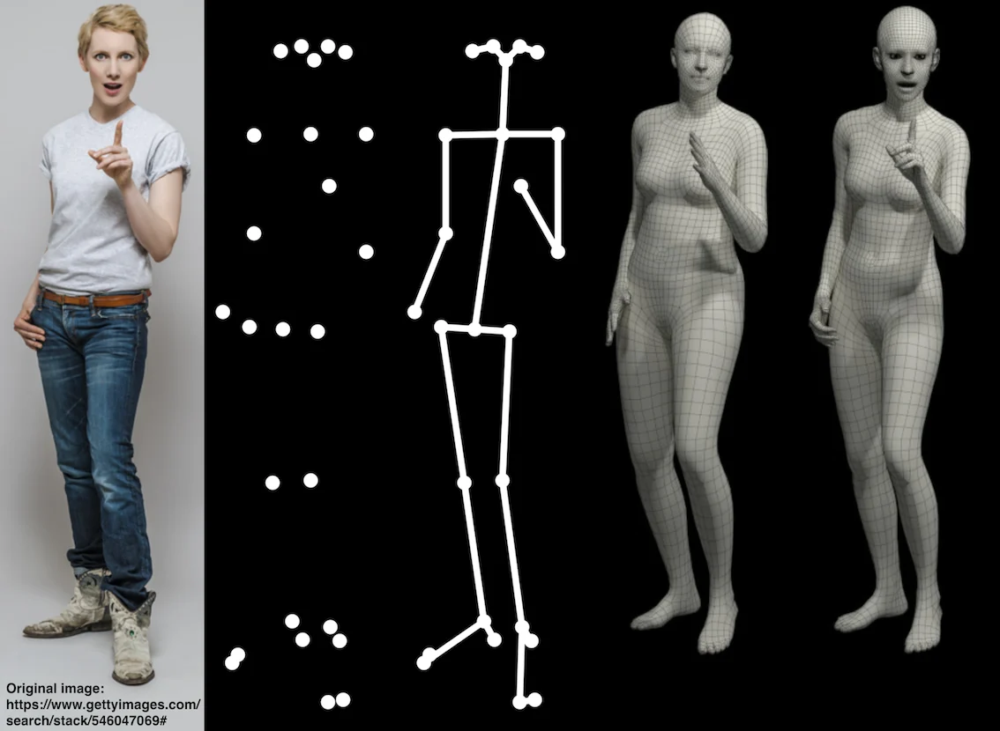
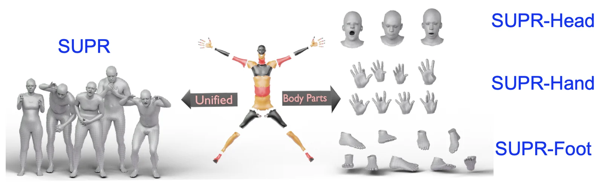

SCAPE 2005
The first model to treat body shape and pose separately. It represents body deformation as deformations of the mesh's triangles.
Our new open-access review maps the whole 3D virtual try-on pipeline: how digital garments are made, how a shopper's body becomes an avatar, and how the two are fitted together. It also compares the methods that do each step.
Virtual try-on (VTO) lets a shopper see how an outfit looks on them without a fitting room, and without telling a customer-service agent their measurements. Virtual fitting rooms are already offered by brands such as GAP and UNIQLO.
Most try-on you see online today is 2D: a generative model blends a photo of a person with a photo of a garment. It is fast and cheap, but it only approximates the shape of the body, so it says little about how a garment actually fits.
3D try-on builds a real digital body and a real digital garment, then fits one onto the other. That makes it possible to view the outfit from the front, back and sides, to choose a size, and to mix and match items. Earlier surveys covered 2D try-on or avatar modelling separately. Our review covers the whole 3D pipeline, including how the garment and the body interact.
Fig. 1 shows how we organise the field. Every 3D VTO system we reviewed combines three parts: (a) generating a 3D garment, (b) reconstructing the person as a 3D avatar, and (c) transforming the garment to fit that body. All three rest on 3D capture and a parametric body model, which are covered below.
Three sensing methods underpin 3D capture. Time-of-flight cameras time how long reflected near-infrared light takes to return to each pixel. Stereo cameras match features between two slightly offset views and triangulate. Structured-light cameras project an infrared pattern and measure how it distorts, which helps on surfaces with little texture. The data is usually stored as point clouds or RGB-D images because they keep the raw geometry; voxels and meshes are derived from those.
Almost every method relies on a parametric body model: a template body whose shape and pose are controlled by a small set of parameters. Virtual try-on needs a body that deforms naturally with the user's shape and pose, and these models provide it. Their shape parameters can even be matched to real bust, waist and hip measurements, which matters for fit. The review covers five:

The first model to treat body shape and pose separately. It represents body deformation as deformations of the mesh's triangles.

A vertex-based linear model that splits deformation into shape-dependent and pose-dependent parts and poses the body with linear blend skinning. It is now the research community's default.

A drop-in replacement for SMPL. Sparse, local pose correctives let it capture more variety across body types with 80% of SMPL's parameters.

Extends SMPL with expressive hands and face by merging the MANO hand model and the FLAME head model, adding joints for the jaw, eyeballs, neck and fingers.

Covers the full body including face, hands and feet, and splits it into separate head, hand and foot models so each part can be modelled independently.
A digital garment comes from one of two sources: a single photo lifted into 3D, or a garment scanned on a mannequin or a person and collected into a dataset.
Datasets give ready-made garments with rich annotations. These are the five we compared:
| Dataset | Year | Garment models | Categories | Captured with | What it adds |
|---|---|---|---|---|---|
| Deep Fashion3D | 2020 | 2,078 | 10 | Multi-view stereo | Real garments (563 instances) with multi-view images, 3D feature lines and 3D body pose |
| SIZER | 2020 | 2,000 | 10 | 3D scans | The first dataset of people in different garment sizes: 100 people, sizes S–XL, with SMPL+G registration and body shape under clothing |
| CLOTH3D* | 2020 | 8,500 | 6 | Physics-based simulation | The first synthetic dataset of clothed human sequences: over 2 million samples, with fabric, topology and self-collision labels |
| ClothesNet* | 2023 | 4,400 | 11 | CGTrader models | 3D boundary lines and keypoints; benchmarks for garment perception and robot manipulation |
| 4D-DRESS | 2024 | 64 | 8 | 4D scans | Real outfits in motion: 520 sequences, 78k frames, labels for every vertex, layered outfits |
* Synthetic, created with graphics engines. Adapted from Table 1 of the paper.
Each dataset tends to serve one job. SIZER is the usual choice for avatar reconstruction, CLOTH3D for training physics-based garment dynamics, and 4D-DRESS for benchmarking garment reconstruction and simulation. ClothesNet and Deep Fashion3D are rarely used for try-on itself; ClothesNet mostly supports robots that fold, hang and dress clothes. The two works closest to full 3D try-on are CustomHumans and Dress-Me-Up. They drape garments from SIZER and CLOTH3D respectively onto avatars reconstructed from THuman2.0.
To show how clothes fit a particular customer, the system first needs a digital version of that customer, with both the shape of the body and the look of its surface. Methods fall into three families:
Align a parametric model such as SMPL to a scan or image. Reliable for body shape, but poor at clothing and hair.
Estimate which points in 3D space are occupied, using implicit functions, NeRF or 3D Gaussian Splatting. This captures clothing and hair.
A parametric model handles the body, and a model-free method handles the shape and look of clothing and skin.
Single-layer avatars model only the outer surface, meaning the skin and the outermost clothing. That keeps them simpler and good at capturing wrinkles and folds. Because clothing and body are one surface, though, they cannot handle loose or sliding garments, or a shirt worn under a jacket.
Multi-layer avatars (often written SMPL+G) model the body and each garment separately. That is what lets you move a garment from one body to another, which is the core of try-on. The cost is a harder optimisation problem, and some methods depend on garment templates that struggle with details like pockets and belts.
| Representation | How it works | Strength | Weakness | Examples |
|---|---|---|---|---|
| Implicit function | A neural network (MLP) predicts whether each 3D point is inside the surface, using features aligned to image pixels | Continuous geometry at any resolution | Texture quality is limited by feature resolution; memory caps input at 512 × 512 | PIFu, PIFuHD, GTA |
| NeRF | A neural field returns colour and density for every 3D point and renders novel views by volume rendering | Novel-view synthesis from only a few images | Slow inference; overfits geometry to texture; noisy; generalises poorly to unseen poses | SCARF, DELTA, USR |
| 3D Gaussian Splatting | Explicit 3D Gaussians (position, opacity, covariance, colour) are optimised directly and drawn by tile-based rasterisation | Fast training, real-time rendering, and easy to animate with LBS | Combining it with skinned bodies and moving cloth still needs new methods | GaussianAvatar, GaussianBody, PhysAvatar, D3GA, LayGA |
Body–garment transformation moves a garment onto a new person while keeping the interaction between cloth and body believable. The garment can come from a clean product photo or from a photo of someone else wearing it.
The garment image is warped to fit the person's pose and pasted onto them. Warping usually uses thin-plate splines (TPS) or appearance flow. There are three variants:
A 3D garment is fitted onto an avatar of any shape and pose. Pix2Surf and Cloth2Tex build textured garments from photos, and DRAPE, TailorNet, DIG and Neural-ABC learn how garments deform. Draping is done in one of two ways:
The cloth is a network of connected particles acted on by gravity, friction, wind and collisions.
More realistic, but computationally expensive.
A model learns how a garment deforms as a function of body shape and pose. Most methods train one model per garment template.
About 100× faster, but less realistic.
Both routes rely on generative models. GANs train a generator to fool a discriminator and produce an image in a single pass. Diffusion models learn to reverse a gradual noising process, building the image step by step. They produce better images, but each image takes many denoising steps.
Diffusion models have a specific weakness: they struggle with small logos and printed text, because inpainting in latent space loses small, precise details. They can also repaint parts of the original person, such as muscles, tattoos and accessories. Methods that use a 3D body prior have problems of their own. A wrong body estimate in a complex pose misaligns the clothing, and with only one photo there is nothing to show what the back and sides should look like.
Draping also tends to give over-smoothed surfaces and unnatural wrinkles, because parametric models encode garments with only a few parameters. And current methods drape a close-fitting result with no real size adjustment. GALA changes garment size through the SMPL-X shape parameters, but the garment just follows the body. Dressing Avatar edits the length of the garment template, but only for the outermost layer. Adding a garment-sizing algorithm could make it possible to show oversized tops or baggy trousers.
Five metrics come up again and again. Chamfer distance checks 3D geometry. The others compare images, which also works for avatars because they are usually rendered to images and compared with the input photos.
Chamfer distance: the average gap between the reconstructed point cloud and the ground-truth point cloud.
Learned perceptual similarity: how different two images look, compared through deep CNN features.
Structural similarity of brightness, contrast and structure, from 0 to 1, where 1 means identical.
Peak signal-to-noise ratio in dB: how much distortion there is at the pixel level compared with the ground truth.
Fréchet Inception distance: how close generated images are to real ones, judged by Inception-network features.
Quantitative evaluation of 3D draping is still not standardised; most papers show qualitative results. Besides image metrics and geometry measures such as CD and IoU, we suggest the Hausdorff distance for garment surface error, and collision counts and interpenetration ratio for how the body and cloth interact.
Most failures fall into three groups:
Extreme or unusual poses missing from the training data, made worse by occlusion, missing depth and inaccurate pose estimates.
Incomplete or distorted rendering in try-on images and meshes, often triggered by complex poses.
A smaller garment on a larger body leads to collisions and poke-through. Noisy raw scans also cause simulation errors.
We trace these failures to four root causes, plus practical hurdles, and suggest a research direction for each:
GANs are fast but unstable in training, prone to mode collapse, and leave visible texture bleeding where the garment meets the person. Diffusion models generalise better but are slow and harder to control. A hybrid GAN–diffusion pipeline, sped up by distillation or consistency models, could get the best of both. Multimodal conditioning could keep skin tone and accessories intact during inpainting.
Poorly weighted losses cause predictable failures. Weak pose priors cause depth ambiguity, plain L2 loss blurs detail, and light interpenetration penalties let cloth pass through the body. Promising fixes are keypoint reprojection loss, physics-aware regularisation, adaptive loss weighting, temporal consistency for texture, and texture-inpainting losses for skin revealed after draping.
Most samples show adult Caucasian women in Western clothing, with few people from Asian or African backgrounds and few non-basic garments. Future benchmarks should cover the full range of skin tones and garment styles, all of upper, lower and full-body outfits, and cross-category swaps such as a T-shirt onto someone wearing a long dress. Showing different garments in identical poses would help separate pose from appearance.
Tracking, draping, collision checks and rendering on a single GPU is still too much. Physics simulation is too slow for real time. Data-driven draping is about 100× faster but has trouble with fast motion, interpenetration and layered outfits. Gaussian splatting is fast but needs new ways to work with skinned bodies and moving cloth. Knowledge distillation and model compression can cut model size and inference time.
AR is the most practical route to live fitting, through phones today and touchscreens or smart mirrors later, with gesture and voice control. Foundation models such as GPT-4 and Stable Diffusion are moving try-on toward text-guided generative AI. That calls for fashion-specific vision-language models and interactive fashion assistants for garment editing, cross-modal retrieval and visual question answering.
To connect the research with real products, we surveyed commercial tools and picked seven representative platforms in three categories:
2D try-on dominates commercial platforms today because it is fast and cheap to run. Research, however, has moved toward 3D, driven by demand for customisable avatars and realistic, interactive visuals. Across the field, diffusion models are taking over from GANs, and combining images with depth gives clearly better try-on results: LPIPS of 0.030–0.046 and SSIM of 0.830–0.985, better than image-only methods.
The hardest problems are still open: accurate full-body draping, datasets with extreme poses, and garment animation that does not depend on predefined motion sequences. As generative AI matures, we expect it to become part of how clothes are designed, produced and sold.
If you work on digital fashion, 3D humans or try-on, we hope the review is a useful map. The full paper has every table, all 166 references and much more detail.
Fung, Y. W., Lim, K. H., & Phang, J. T. S. (2026). Review on three-dimensional clothing modelling and digital human reconstruction for virtual try-on applications. Multimedia Tools and Applications, 85, 359. https://doi.org/10.1007/s11042-026-21423-2
@article{fung2026review,
title = {Review on three-dimensional clothing modelling and digital
human reconstruction for virtual try-on applications},
author = {Fung, Yi Wei and Lim, King Hann and Phang, Jonathan Then Sien},
journal = {Multimedia Tools and Applications},
volume = {85},
pages = {359},
year = {2026},
doi = {10.1007/s11042-026-21423-2}
}